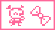
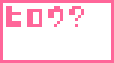
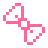
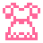
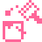
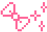
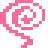

<HTML><BODY>
<CENTER>
<TABLE WIDTH=640 BACKGROUND="header.gif">
<TR><TD HEIGHT=82>&nbsp &nbsp<A HREF="index.html"></A></TD></TR></TABLE>
</BODY></HTML><HTML>
  <HEAD>
   <TITLE>Arukotchi translated!</TITLE>
   <LINK REL=stylesheet HREF="styles.css" TYPE="text/css">
  </HEAD>
 <BODY BACKGROUND="stars.gif" bgproperties="fixed">
    <CENTER>
    <TABLE WIDTH=640 BACKGROUND="aru/aru_back.gif" BORDER=2px BORDERCOLOR="#669966">
     <TR>
      <TD>
  <B CLASS="third">These are the kinds of events that will happen!</B>
  <TABLE ALIGN="center">
    <TR>
      <TD COLSPAN=2><B CLASS="first">1. Finding an Item</B><BR>
      Arukotchi has found a useful item!  I don't know who's left it, but lets take it anyway.  Most items will raise her beauty rating, and will make Arukotchi do all sorts of different activites on the main screen [for example, if you find the recipe book, you will, from time to time, see Arukotchi with a frying pan], so it's usually good to pick up all the items you find.  But beware of the surume!</TD></TR>
    <TR> <TD><BR><BR></TD>
               <TD><DIV>When Arukotchi beeps, even if you don't press a button, it will remain in the 'event mode' so it's ok if you don't press a button to activate the screen right away.  After Arukotchi has found an item, you will be asked if you want to take it.  Press the Y button to take it or press the N button to leave it.</DIV></TD>
    </TR>
  </TABLE>
  <BR>
  <TABLE BGCOLOR="#FFFFFF" ALIGN="center">
    <TR>
      <TD BGCOLOR="#FF6699" COLSPAN=3><FONT FACE="arial" COLOR="#FFFFFF"><CENTER><H3>The 6 kinds of items:</H3></TD>
    </TR>
    <TR>
      <TD><B CLASS="second">Ribbon</B><DIV>A very cute ribbon to put in Arukotchi's hair.  Will increase beauty rating</TD>
      <TD><B CLASS="second">Recipe Book</B><DIV>Cooking skills will make Arukotchi even more attractive.  Will increase beauty rating</TD>
      <TD><B CLASS="second">Compact</B><DIV>A compact that looks like it may be able to transform Arukotchi [note: this is a reference to a Japanese cartoon].  But it can't.  Will increase beauty rating</TD>
    </TR>
    <TR>
      <TD><B CLASS="second">Rouge</B><DIV>Red lipstick makes Arukotchi seem even more grown up.  Will increase beauty rating greatly.</TD>
      <TD><B CLASS="second">Dress</B><DIV>A fabulous gown just like Cinderella's...  Will really, really increase beauty rating.</TD>
      <TD><B CLASS="second">Surume (dried squid)</B><DIV>Certain conditions have to be met before this item will appear.  Surume seems to be a favourite of Oyajitchi.</TD>
    </TR>
  </TABLE><BR><BR>
  <B CLASS="first">2. Mystery Box!</B><BR>
  Sometimes while Arukotchi is walking, she'll come across a Mystery Box, the contents of which are unknown.  It could be a really good item, or it could be a really bad item...whether to open the box or not is a major decision!  Go with your insticts and decide!<BR>
  <TABLE ALIGN="center" WIDTH=350>
    <TR>
      <TD><DIV>When you are asked if you want to open the box,press the Y button to open it, or press the Nbutton to leave it.</TD>
      <TD><BR><BR></TD>
    </TR>
  </TABLE><BR><BR><CENTER>
  <TABLE BGCOLOR="#FFFFFF">
    <TR>
      <TD COLSPAN=3 BGCOLOR="#FF6699"><FONT FACE="arial" COLOR="#FFFFFF"><CENTER><H3>There are 8 items that you can find in a Mystery Box</H3></CENTER></TD>
    </TR>
    <TR>
      <TD><B CLASS="second">Plastic Model</B><DIV>If you get the plastic model, you can press the N button to choose a gotchi-boy, then press the Y button to give the model to him.  The love-love rating of the gotchi-boy will go up slightly</TD>
      <TD><B CLASS="second">Cell Phone</B><DIV>In the same way that you can give the plastic model to a gotchi-boy, you can choose a gotchi-boy to call on the cell phone.  The love-love rating of the gotchi-boy you call witll go up!</TD>
      <TD><B CLASS="second">Dango</B><DIV>Oh no!  Arukotchi won't be able to resist the sweetness of the dango [a Japanese snack/dessert] and will end up eating it.  Her beauty rating will go down...</TD>
    </TR>
    <TR>
      <TD><B CLASS="second">Paint</B><DIV>Oh NO!!  Paint fell on Arukotchi's head!  Her beauty rating will go down a lot.</TD>
      <TD><B CLASS="second">Sparkly Ribbon</B><DIV>As soon as Arukotchi gets this ribbon, the gotchi-boys will be all over her!</TD>
      <TD><B CLASS="second">Uzumaki</B><DIV>Oh no!  The curse of the uzumaki will affect Arukotchi as soon as she picks it up.  All the gotchi-boys will try to avoid her.</TD>
    </TR>
    <TR>
      <TD><B CLASS="second">Bicycle</B><DIV>Lucky!  On this bicycle, Arukotchi can travel fast!  The next even will occur really soon!</TD>
      <TD><B CLASS="second">Turtle</B><DIV>ACK!  Arukotchi will start to walk as slowly as a turtle...  Before another event can happen, you'll have to walk a lot of steps...</TD>
    </TR>
  </TABLE>
<BR> <A HREF="arukotchi3.html"></A> <A HREF="arukotchi5.html"></A>
   </TD>
   </TR>
  </TABLE>
 </BODY>
</HTML>
<HTML><BODY>
<CENTER>
<TABLE WIDTH=640 BACKGROUND="footer.gif">
<TR><TD HEIGHT=58><CENTER><A HREF="index.html"></A></TD></TR></TABLE>
</BODY></HTML>
